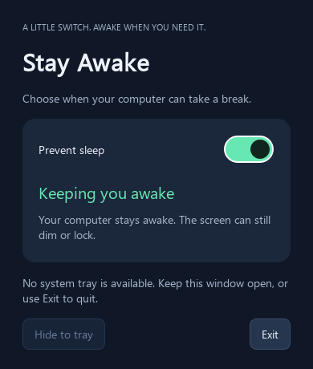
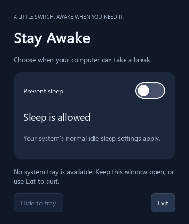

100% free · No account · No tracking
Keep your PC awake while AI agents do the work.
Stay Awake is a tiny one-switch widget that stops idle sleep during overnight agent runs, builds, downloads and renders — on Windows, macOS and Linux. Your power settings are never changed.
A LITTLE SWITCH. AWAKE WHEN YOU NEED IT.
Stay Awake
Choose when your computer can take a break.
Keeping you awake
Your computer stays awake. The screen can still dim or lock.
Closing this window keeps the app in your tray. Exit releases sleep prevention.
01 / The problem
Your agent works all night. Your PC naps after 15 minutes.
Autonomous coding agents can refactor, test and migrate for hours without you — but one idle timer can pause the whole run at 2 a.m. You wake up to step 34 of 61 and a cold trail.
Every interrupted night costs you the same things: lost progress, a broken agent context you must rebuild, and a morning spent re-running what already ran.
Stay Awake holds a temporary OS sleep inhibitor while the switch is on — so the machine keeps crunching until the job is done. Switch it off and your normal sleep policy is back, untouched.
- Paused agent runs — idle sleep freezes long refactors, migrations and test suites mid-step.
- Killed downloads & uploads — datasets, backups and video renders stall overnight.
- Dead dashboards — monitoring screens and remote-access machines go dark when you need them.
[02:14] step 34/61 … refactoring auth tests
[02:15] OS idle sleep → run paused. Session cold.
[02:14] step 34/61 … refactoring auth tests
[04:47] step 59/61 … full suite green
[06:02] done — 61/61 steps, PR opened ✓
Illustrative log. Stay Awake prevents automatic idle sleep; explicit Sleep, a closed lid or admin policy can still suspend the machine.
02 / What you get
Everything a night shift needs. Nothing it doesn't.
No dashboards, no accounts, no 40-toggle settings maze. One switch and a short list of promises the app actually keeps.
-
One switch, zero learning curve
On means awake, off means normal. The whole interface is a single widget — if you can flip a light switch, you already know the app.
-
Long jobs survive the night
AI agent runs, full test suites, video renders, dataset downloads, backups and compiles keep going until they decide they're done — not your idle timer.
-
Power settings never change
Stay Awake holds a temporary OS inhibitor instead of editing your power plan. Every launch starts with prevention off; exit and it's like the app was never there.
-
Awake doesn't mean unlocked
The display may still dim or turn off and the screen may still lock. Your machine crunches numbers behind a locked screen — security intact.
-
Lives quietly in the tray
Close the window and it keeps running in the system tray or menu bar with a matching toggle. One instance per session — relaunching just reopens it.
-
Free forever, private by design
No account, no ads, no telemetry, no admin rights. A tiny native-feeling Qt widget that does one job and stays out of your way.
03 / Built for the agent era
Point your agent at the backlog. Go to bed.
The best way to use a coding agent is asynchronously: brief it well, let it grind through the boring middle, review the diff with coffee. That only works if the machine stays up. Stay Awake is the night-shift supervisor — silent, free, and gone by morning.
- Overnight refactors & migrations — wake up to a finished branch, not a frozen step counter.
- Marathon test suites & builds — full CI-style runs on your own box, uninterrupted.
- Renders, uploads & downloads — media exports and dataset pulls that outlast your bedtime.
- Always-on sidekicks — dashboards, homelab panels and remote machines that must stay reachable.
Tool-agnostic. Works with Claude Code, Cursor, Copilot CLI, Aider, Gemini CLI — or a plain shell script. If it runs on your PC, Stay Awake keeps the lights on for it.
23:41 $ agent run "migrate auth to v2"
23:42 plan accepted — 61 steps, ~6h
01:18 step 28/61 … tests green so far
03:55 step 51/61 … edge cases patched
05:47 done — 61/61, PR #482 opened ✓
05:47 you slept through all of it ✓
Flip the switch when the run starts, switch it off with your morning coffee. That's the whole workflow.
04 / The app
A little switch. Awake when you need it.
One shared interface on every OS, powered by each platform's native sleep inhibitor — no hacks, no simulated keypresses, no admin rights.


| OS | Sleep prevention | Tray behavior |
|---|---|---|
| Windows | SetThreadExecutionState — the same API media players use. | Notification area; the icon may sit in the overflow menu. |
| macOS | caffeinate — Apple's native no-sleep assertion. | Menu bar icon with Open and toggle actions. |
| Linux | GNOME SessionManager or freedesktop PowerManagement D-Bus inhibition. | StatusNotifierItem / XEmbed tray. GNOME may need the AppIndicator extension. |
05 / How it works
Three steps. The middle one is automatic.
Flip the switch
Starting an agent run, a render or a big download? Turn prevention on. The widget shows “Keeping you awake”.
The OS holds the line
Your system grants a temporary sleep inhibitor. The machine keeps working — while the screen can still dim and lock.
Switch off, back to normal
Job done? Switch off or Exit. The inhibitor is released and your existing idle policy takes over, unchanged.
Honest limits: Stay Awake prevents automatic idle sleep. Pressing Sleep yourself, closing a laptop lid, critical-battery actions and administrator policies can still suspend the computer — that's the OS doing its job.
06 / Download
Free forever. No strings attached.
No paywall, no account, no ads, no telemetry. Grab the source, run it with Python 3.10+ (3.12 recommended), and build a distributable app with one command.
Free means free: every feature, every platform, no trial clock, no “pro” tier.
Windows
PowerShell, Python 3.12:
# run from source
py -3.12 -m venv .venv
.\.venv\Scripts\python -m pip install -e ".[dev]"
.\.venv\Scripts\python -m stay_awake
macOS
Terminal, Python 3.10+:
# run from source
python3 -m venv .venv
.venv/bin/python -m pip install -e '.[dev]'
.venv/bin/python -m stay_awake
Linux
Terminal, Python 3.10+:
# run from source
python3 -m venv .venv
.venv/bin/python -m pip install -e '.[dev]'
.venv/bin/python -m stay_awake
Packaged apps are built with PyInstaller on each target OS (Windows → StayAwake.exe, Linux → StayAwake, macOS → StayAwake.app). CI builds all three automatically — see Actions. On Ubuntu, install libxcb-cursor0, libxkbcommon-x11-0 and libegl1 if Qt reports missing platform libraries.
07 / Keep it free
Stay Awake is free. Coffee keeps me awake.
There's no paywall and never will be — but if the app saved your overnight run, you can fuel the next release with a coffee. Completely optional, deeply appreciated.
No perks, no tiers — just thanks.
08 / Questions
Asked before you ask.
Is Stay Awake really free?
Yes — 100% free with no strings attached. No account, no ads, no telemetry, no paywalled features, no admin rights. If it saved your night, there's an optional Buy me a coffee link, and that's it.
How does it help AI coding agents?
Agents like Claude Code, Cursor, Copilot CLI, Aider or Gemini CLI often run for hours. If the OS idles into sleep mid-run, the work pauses or dies. Stay Awake holds a temporary sleep inhibitor so overnight refactors, test suites and builds finish while you sleep — the screen may still dim and lock.
Does it change my power settings?
Never. It requests a temporary OS-level inhibitor while the switch is on. Switch off or Exit and your existing idle sleep policy applies again, exactly as before. Every launch starts with prevention off.
Will my screen stay on all night?
Not necessarily. Stay Awake prevents automatic idle sleep; the display may still turn off and the screen may still lock. The machine keeps crunching behind a locked screen.
Which platforms are supported?
Windows, macOS and Linux — one shared Qt interface using each OS's native inhibitor: SetThreadExecutionState on Windows, caffeinate on macOS, and GNOME SessionManager / freedesktop D-Bus inhibition on Linux.
What happens when I close the window?
It keeps running quietly in the system tray (Windows notification area, Linux panel, macOS menu bar) with a matching toggle. Exit in the tray menu releases prevention and quits completely.
What can't it prevent?
Explicit Sleep, closing a laptop lid, critical-battery actions and administrator policies can still suspend the computer — and after release, the OS decides when to sleep using its own idle policy. That's by design: the app never fights your system.
Do I need administrator rights?
No. Requesting a sleep inhibitor is a normal user-level operation on all three platforms.
Stop losing nights to idle sleep.
One switch. Three platforms. Zero cost. Your agents will thank you.